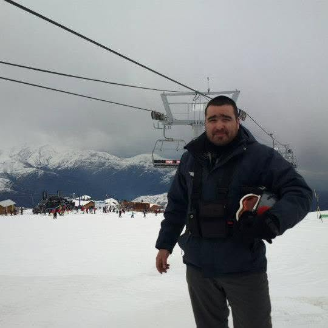

Curriculum vitae

Hugo Alvarez
Resumen
A lo largo de su carrera, se ha especializado en “desarrollo de proyectos eléctricos", montajes y mantenimiento industrial. Ha liderado con éxito iniciativas de proyectos técnicos e ingeniería. demostrando una sólida capacidad para liderar y ejecutar los desafíos. En su rol más reciente en la empresa Ingen-lock como jefe de proyectos, destaca por su enfoque en desarrollar nuevas tecnologías al rubro industrial.


Datos Personales
- Nombre: Hugo Marcelo Alvarez Echeverria
- Lugar de nacimiento: Santiago, Chile.
- Fecha de nacimiento: 03 de enero 1983
Formacion
Es licenciado/graduado en ingeniería eléctrica por la Universidad iberoamericana de Montreal. Para mantenerse a la vanguardia en su sector, ha complementado su educación formal con maestría en ciencias de la ingeniería, master en gestión de la industria y energías renovables.

Premios y Logros
Su desempeño y aportes al sector han sido galardonados en diversas ocasiones, destacando:
- Premio al merito por logros de la ingeniería por escuela de ingeniería.
- Premio a la trayectoria educativa de la universidad iberoamericana de Monreal.
- Premio por medioambiente, por proyecto energético con energías renovables.